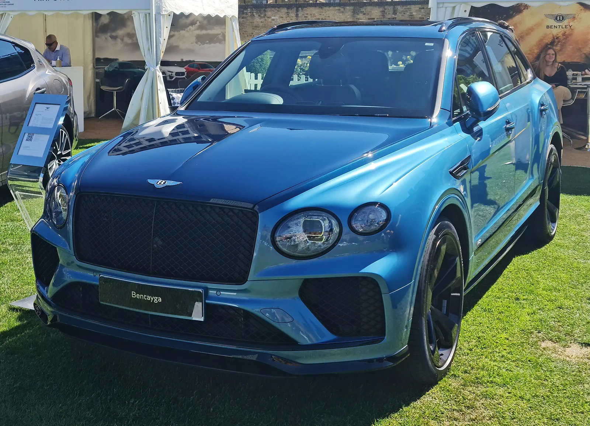
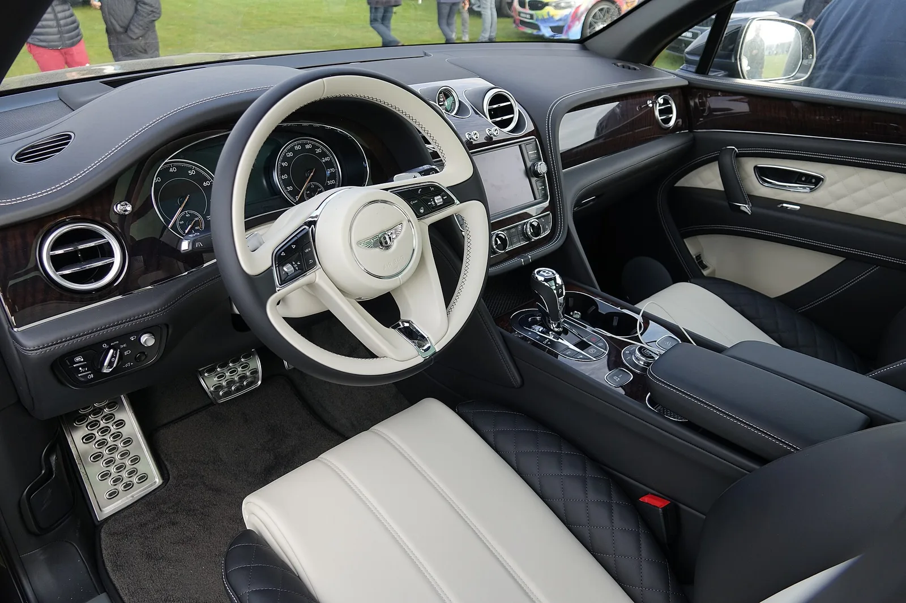
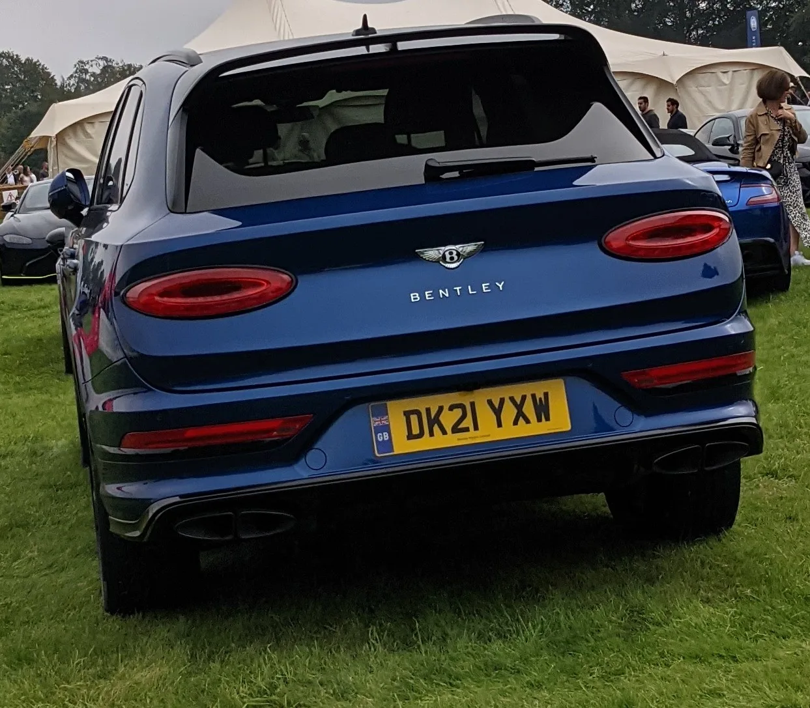

▲ 벤틀리는 컨티넨탈 GT·플라잉스퍼·벤테이가(사진)에 이어 브랜드 네 번째 모델이자 최초의 순수전기 SUV '토르칼'을 공개했다 ⓒ Wikimedia Commons (참고 이미지, 토르칼 실차 아님)
"고객들은 단지 전기차라는 이유로 완전히 다른 차를 원하지 않는다." 벤틀리모터스 CEO가 2026년 9월 24일 영국 런던에서 브랜드 최초의 순수전기 SUV '토르칼(Torcal)'을 세계 최초 공개하며 던진 말이다. 몇 달 앞서 페라리가 브랜드 첫 전기차 '루체(Luce)'를 55만 유로(약 8억 원)를 웃도는 초고가로 내놓은 것과는 결이 다른 선택이다. 오토헤럴드는 이를 두고 "루체와는 다른 생각"이라는 제목을 달았다.
토르칼은 컨티넨탈 GT, 플라잉스퍼, 벤테이가에 이어 벤틀리 라인업에 합류하는 네 번째 모델이자, 기존 차를 전동화한 파생형이 아니라 처음부터 순수전기로 개발된 독립 모델이다. 위키미디어 커먼즈에는 아직 토르칼 실차 사진이 등록되지 않아, 이 기사의 사진은 벤틀리의 기존 라인업(벤테이가·컨티넨탈 GT) 참고 이미지로 대체했다.
1. 벤틀리 첫 순수전기 SUV, 런던에서 베일 벗다
벤틀리모터스는 2026년 9월 24일 영국 런던에서 열린 공개 행사를 통해 토르칼을 세계 최초로 선보였다. 벤틀리가 지난해 발표한 전동화 로드맵에서 예고했던 "2026년 첫 순수전기 럭셔리 도심형 SUV" 계획이 실현된 것이다.

▲ 토르칼은 컨티넨탈 GT(사진)·플라잉스퍼·벤테이가에 이은 벤틀리의 네 번째 모델이자 첫 순수전기차다 ⓒ Wikimedia Commons (참고 이미지, 토르칼 실차 아님)
토르칼은 벤틀리의 상징인 영국 크루(Crewe) 본사 공장에서 설계부터 개발, 생산까지 모두 이뤄진다. 벤틀리는 이번 신차 생산을 위해 크루 공장에 3억 5000만 파운드(약 6500억 원)를 투자했다고 밝혔다. 전기차 전용 모델임에도 벤틀리 특유의 수작업 가죽·목재 마감과 장인정신을 그대로 이어간다는 점을 강조했다.
📍 왜 '토르칼'인가
벤틀리는 전통적으로 신차명에 지명이나 역사적 상징을 즐겨 사용해왔다. 콘티넨탈, 벤테이가(사하라 사막의 산), 플라잉스퍼처럼 브랜드 헤리티지를 반영하는 작명 관행의 연장선에서, 토르칼 역시 순수전기 시대를 여는 벤틀리의 새로운 정체성을 담은 이름으로 소개됐다.
2. 제원 — 888마력·600km·400kW 초급속 충전
토르칼은 800V 전기 아키텍처를 기반으로 한다. 배터리는 192개의 리튬이온 파우치 셀로 구성되며 총 용량은 113kWh(113.2kWh)다. 성능은 기본형과 고성능 사양 '토르칼 S' 두 단계로 나뉜다.
| 항목 | 기본형 | 토르칼 S |
|---|---|---|
| 최고출력 | 821마력 | 888마력 |
| 최대토크 | - | 1350Nm(약 137.7kgf·m) |
| 0-100km/h | 3.4초 | 2.9초(런치 컨트롤 사용 시) |
| 최고속도 | 250km/h | 260km/h |
| 배터리 용량 | 113kWh (800V, 192셀 파우치형) | |
| 주행거리(WLTP) | 최대 600km(약 375마일) | |
| 최대 충전속도 | 400kW급 초급속 | |
| 전장 / 트렁크 / 프렁크 | 약 5m / 460L / 90L | |
✅ "점심시간보다 빠른 충전" — InsideEVs가 주목한 이유
· 400kW급 초급속 충전 인프라 기준 10~80% 충전에 약 16분 소요
· 단 7분 충전으로 약 160km(100마일)의 추가 주행거리 확보 가능
· InsideEVs는 이를 두고 "점심 한 끼를 다 먹기도 전에 충전이 끝난다"는 취지로 소개
· 벤틀리 특유의 정숙성과 편의성에 실용적인 충전 속도까지 더해 장거리 이동 부담을 낮춘 것이 특징
3. "루체와는 다른 생각" — 벤틀리의 가격 전략
페라리는 지난 2026년 5월 이탈리아 로마에서 브랜드 최초의 순수전기차 '루체(Luce)'를 공개했다. 페라리 최초의 5인승 모델이기도 한 루체는 55만 유로(약 8억 원)를 웃도는 초고가 전략을 택했다. '전동화=한정된 소수를 위한 초고가 모델'이라는 공식을 따른 셈이다.
반면 벤틀리는 다른 길을 택했다. 토르칼의 영국 시작가는 17만 3000파운드(약 3억 1000만 원)로, 벤틀리 라인업 내에서는 상대적으로 진입 장벽이 낮은 가격대다. 오토헤럴드가 기사 제목에 "루체와는 다른 생각"이라는 표현을 쓴 것도 이런 가격 철학의 차이를 짚은 것이다.
📍 신규 고객을 노리는 벤틀리
벤틀리 CEO는 공개 행사에서 "고객들은 단지 전기차라는 이유로 완전히 다른 차를 원하지 않는다"며 "보다 접근 가능한 가격대의 벤틀리로서 새로운 시장을 열어줄 것"이라고 말했다. 실제로 사전 계약 고객의 절반가량이 벤틀리 브랜드를 처음 구매하는 신규 고객으로 파악됐다. 초고가 한정판 대신 판매 볼륨을 통한 전동화 전환을 노리는 전략으로 풀이된다.

▲ 토르칼은 전기차 전용 모델이지만 벤틀리 특유의 수작업 가죽·목재 마감(벤테이가 실내 참고사진)을 그대로 계승한다는 방침이다 ⓒ Wikimedia Commons (참고 이미지, 토르칼 실차 아님)
4. 벤틀리의 전동화 로드맵 'Beyond100+'
토르칼은 벤틀리가 지난해 발표한 전동화 전략 로드맵 'Beyond100+'의 첫 결과물이다. 그동안 벤틀리 라인업에서 전동화 모델은 벤테이가 하이브리드 등 플러그인 하이브리드(PHEV)에 그쳤고, 순수전기(BEV) 모델은 이번 토르칼이 처음이다.
✅ Beyond100+ 로드맵 핵심 내용
· 2026년 — 브랜드 첫 순수전기 럭셔리 도심형 SUV(토르칼) 공개
· 2026~2035년 — 매년 새로운 PHEV 또는 BEV 신차를 순차적으로 선보이는 계획
· 하이브리드 라인업은 최소 2035년까지 병행 유지
· 2035년부터 순수전기차만 생산·판매하는 완전 전동화 체제로 전환
벤틀리의 전동화 로드맵 'Beyond100+'에 대한 자세한 내용은 아래에서 확인할 수 있다. 벤틀리 Beyond100+ 로드맵 바로가기
5. 초고급 전기 SUV 삼파전 — 스펙터·마이바흐 EQS와 비교
토르칼의 등장으로 초고급 전기차 시장은 롤스로이스, 메르세데스-마이바흐와 어깨를 나란히 하는 삼파전 구도가 됐다. 각 브랜드가 전동화를 대하는 방식은 조금씩 다르다.
| 모델 | 최고출력 | 주행거리(WLTP) | 영국/국내 가격대 |
|---|---|---|---|
| 벤틀리 토르칼 S | 888마력 | 최대 600km | 영국 약 3억 1000만 원~ |
| 롤스로이스 스펙터 | 601마력(블랙 배지 680마력) | 최대 628km | 국내 약 6억 2200만 원~ |
| 메르세데스-마이바흐 EQS SUV | 약 658마력(484kW) | 최대 600km(추정) | 차급상 스펙터보다 낮은 가격대 |
📍 세 브랜드, 서로 다른 전동화 철학
롤스로이스는 스펙터를 두고 "전기차라서 만든 것이 아니라, 롤스로이스를 더 롤스로이스답게 만들기 위해 전기를 선택했다"고 설명하며 정숙성과 토크감을 앞세운다. 마이바흐 EQS SUV는 벤츠의 전동화 기술력을 총동원했지만 S클래스 플랫폼을 기반으로 해 브랜드 독자성은 상대적으로 약하다는 평가를 받는다. 벤틀리 토르칼은 이 둘의 중간 지점 — 독자 개발 플랫폼의 정통성과, 상대적으로 접근 가능한 가격을 동시에 취하는 전략을 택했다.

▲ 벤틀리는 SUV 차급에서도 롤스로이스 스펙터, 마이바흐 EQS SUV와 경쟁하게 됐다(벤테이가 후면 참고사진) ⓒ Wikimedia Commons (참고 이미지, 토르칼 실차 아님)
6. 요약
벤틀리모터스가 2026년 9월 24일 런던에서 브랜드 최초의 순수전기 SUV '토르칼'을 세계 최초 공개했다. 최고출력 888마력, WLTP 기준 최대 600km 주행거리, 400kW급 초급속 충전(10~80% 약 16분, 7분 충전으로 160km 추가)을 갖췄으며, 영국 시작가는 약 3억 1000만 원이다.
페라리가 첫 전기차 '루체'를 8억 원대 초고가로 내놓은 것과 달리, 벤틀리는 상대적으로 접근 가능한 가격 전략을 택했다. 사전 계약 고객의 절반이 신규 고객이라는 점은 이 전략이 효과를 보고 있음을 보여준다. 토르칼은 벤틀리의 전동화 로드맵 'Beyond100+'의 첫 결과물이며, 벤틀리는 2035년까지 완전 전동화를 목표로 매년 새로운 PHEV·BEV 모델을 선보일 계획이다.
초고급 전기 SUV 시장은 이제 벤틀리 토르칼, 롤스로이스 스펙터, 메르세데스-마이바흐 EQS SUV의 삼파전이 됐다. 브랜드마다 전동화를 대하는 철학은 다르지만, 럭셔리 브랜드들의 순수전기 전환이 본궤도에 올랐다는 점은 분명해졌다.